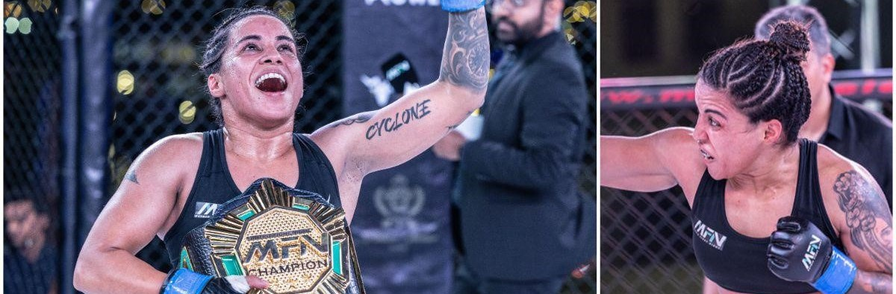

India has a long and storied tradition of women excelling in combat sports, and Puja Tomar's recent achievement in the UFC is a testament to this legacy. Hailing from Uttar Pradesh, Tomar has made history as a pioneer for women's MMA in India, showcasing her incredible talent and determination on an international stage.
Tomar's debut in the UFC was nothing short of remarkable. Facing Rayanne dos Santos at strawweight in the very first bout of the card, Tomar engaged in a grueling 15-minute battle that kept fans on the edge of their seats. Dos Santos, with her height advantage and range, tried to dictate the pace, but Tomar responded with relentless energy, pushing through to the final bell. The match was a back-and-forth spectacle, highlighting Tomar's resilience and skill. When the scorecards were read, it was Tomar who emerged victorious with a split decision win (30-27, 27-30, 29-28).
This victory was more than just a personal triumph for Tomar; it was a significant moment for Indian sports. "I want to show the world that Indian fighters are not losers. We are going all the way up! We are not going to stop! We'll become a UFC champion soon! This win is not my win, it's for all Indian fans and all Indian fighters," Tomar passionately declared. Her pride was palpable as she carried the Indian flag into the Octagon, a symbol of her dedication and love for her country.
Puja Tomar's success is a milestone in the UFC's journey as well, reflecting the growing diversity and inclusivity in the sport. UFC Senior Vice President and Head of Asia, Kevin Chang, expressed his excitement about Tomar's future, saying, "Puja Tomar is a pioneer for women's MMA in India, and her win made history. We are looking forward to Puja continuing to put on amazing performances as she represents India."
Tomar's journey is inspiring on many levels. She represents the strength and determination of Indian women, breaking barriers and setting new standards in combat sports. Her story is one of perseverance, showcasing how far passion and hard work can take you. As she continues to rise in the ranks of the UFC, she not only paves the way for future Indian fighters but also brings glory and pride to her nation.
In a sport where every match is a testament to an athlete's physical and mental fortitude, Puja Tomar has proven that she has what it takes to compete with the best. Her win is a beacon of hope and a source of inspiration for aspiring fighters across India, reminding them that with dedication and resilience, they too can achieve greatness on the world stage.
"Truth Uncovered, Reality Restored."